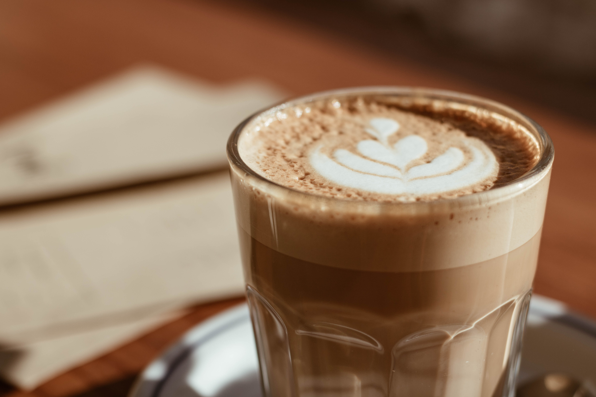
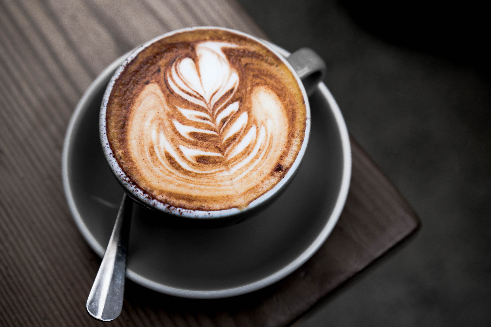

What choices of coffee do we have in Melbourne?
Here in Melbourne, we have a wide varieties of coffee for travellers to choose from. This includes: Latte, Cappuccino, Mocha, Flatwhite, just to name a few.
Here are a few examples:
- Latte
- Ice or Hot
 - Cappuccino
- Full cream milk or Soy milk
 - Mocha
- Children size or Large size

Melbourne has the best coffee culture in Australia, due to its exotic food culture and lively vibe. The graffitti paintings just add to it! There is no place like Melbourne that gives the traveller so much energy and so much chances to try out different food.
From innovative coffee beverages, the exotic flavors of complementary foods, through to the power of the communal table, the Melbourne scene is so much more than just premium Flat Whites. It’s a way of life and true piece of pride for Melbournians and Australians.--
Quote from The Blue Stone Lane Website.
As you can see, latte art is a big part of our culture here in Melbourne. You can pull out leaves, hearts, and even a swan! You can come up with many creative ways to design your own latte art.
Melourne's Cafe is a great place for you to relax, catch up with friends, and enjoy quality ME time!